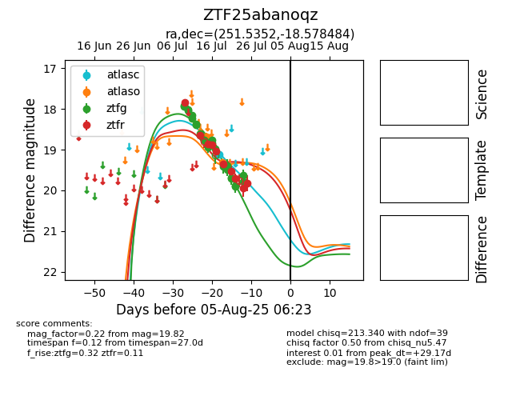

Target ZTF25abanoqz at 2025-08-05 07:33, see:
FINK: fink-portal.org/ZTF25abanoqz
Lasair: lasair-ztf.lsst.ac.uk/objects/ZTF25abanoqz
ALeRCE: alerce.online/object/ZTF25abanoqz
alt names
ZTF25abanoqz (ztf,fink)
coordinates:
equatorial (ra, dec) = (251.5352,-18.57848)
galactic (l, b) = (0.8157,+17.05556)
photometry
last atlasc=19.11, atlaso=19.32, ztfg=19.78, ztfr=19.82
1 atlasc, 3 atlaso, 26 ztfg, 10 ztfr detections
